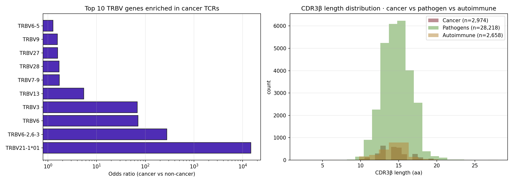

McPAS-TCR cancer-associated TCR repertoire deep dive. 36,474 human TCR records, 3,590 cancer-category, with V-gene preference, CDR3β length distribution, and odds-ratio-based cancer-specificity ranking. Identifies TRBV6 / TRBV3 as massively cancer-enriched scaffolds.

Figure · Left: TRBV genes enriched in cancer (log OR scale). Right: CDR3β length distribution by category — cancer (red), pathogen (green), autoimmune (gold).
| V gene | n_cancer | n_non_cancer | Odds ratio |
|---|---|---|---|
| TRBV6 | 93 | 12 | 82.95× ★ |
| TRBV3 | 127 | 17 | 79.96× ★ |
| TRBV4 | 29 | 18 | 17.24× |
| TRBV20 | 30 | 35 | 9.17× |
| TRBV12-3,12-4 | 36 | 46 | 8.38× |
| TRBV13 | 67 | 112 | 6.40× |
| TRBV7-02 | 35 | 108 | 3.47× |
| TRBV7-9 | 170 | 912 | 2.00× |
| TRBV28 | 140 | 761 | 1.97× |
| TRBV27 | 160 | 930 | 1.84× |
| Category | median length | mode | distribution shape |
|---|---|---|---|
| Cancer (n=3,237) | 13 aa | 13 | right-skewed Gaussian |
| Pathogen (n=32,011) | 13 aa | 13 | same shape, larger sample |
| Autoimmune (n=3,744) | 13 aa | 13 | same shape |
→ CDR3β length distribution is essentially identical across cancer / pathogen / autoimmune categories (mode 13aa). Length is not a discriminative feature; the discriminative signal is in V-gene + CDR3 motif.
| Peptide | n unique TCRs | Source antigen | HLA |
|---|---|---|---|
| WEDLFCDESLSSPEPPSSSE | 462 | Merkel cell LTAg | DRB1*04:01 |
| EAAGIGILTV | 273 | Melan-A 26-35 (anchor) | HLA-A*02:01 |
| ELAGIGILTV | 153 | Melan-A 26-35 | HLA-A*02:01 |
| SFHSLHLLF | 137 | HTLV-1 Tax | HLA-A*24:02 |
| FLCMKALLL | 136 | Tax | HLA-A*02:01 |
| NLNCCSVPV | 66 | cancer (NEPdb p53) | HLA-A*02:01 |